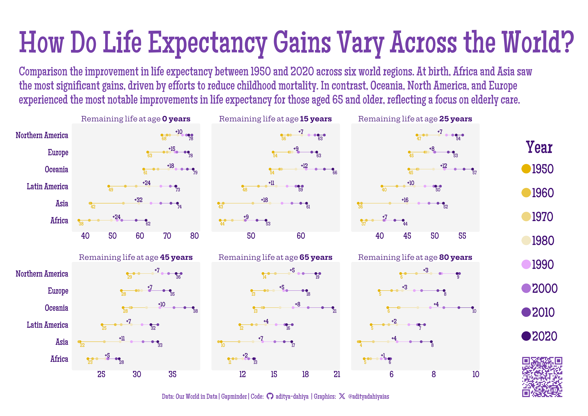

Which continents made the biggest strides in longevity, and for which age-groups?
The data for this infographic is sourced from “Our World in Data” and Gapminder.org, which provide comprehensive global life expectancy statistics. The graphic illustrates the changes in life expectancy between 1950 and 2020 across six regions: Africa, Asia, Latin America, Oceania, Europe, and North America. Each panel compares life expectancy at birth and at ages 15, 25, 45, 65, and 80 years. The findings reveal that the most significant improvements at birth occurred in Africa and Asia, primarily due to successful efforts in reducing childhood mortality through better healthcare and vaccination programs. Conversely, the most substantial gains in life expectancy for older age groups (65 and 80 years) were observed in Oceania, North America, and Europe, indicating a stronger emphasis on elderly care and advancements in medical treatments for age-related conditions in these regions. This comparison highlights the diverse regional strategies and achievements in enhancing life expectancy over the past seven decades.

Life Expectancy Trends by Region (1950-2020): This plot compares the changes in life expectancy at birth and at ages 15, 25, 45, 65, and 80 years across Africa, Asia, Latin America, Oceania, Europe, and North America. Each panel highlights regional improvements over the past seven decades.
How I made this graphic?
Getting the data
Code
# Data Import and Wrangling Toolslibrary(tidyverse) # All things tidylibrary(owidR) # Get data from Our World in R# Final plot toolslibrary(scales) # Nice Scales for ggplot2library(fontawesome) # Icons display in ggplot2library(ggtext) # Markdown text support for ggplot2library(showtext) # Display fonts in ggplot2library(colorspace) # To lighten and darken colours# The Expansion pack to ggplot2library(ggforce) # to learn some new geom-extensions# Searrch for the life expectancy indicators in Our World in Datatemp1 <-owid_search("life expectancy") |>as_tibble()# Select an indicatorsel_indicator <- temp1 |>filter(str_detect(title, "Remaining")) |>slice_head(n =1) |>pull(chart_id)# Raw Datatemp <-owid(chart_id = sel_indicator)
Visualization Parameters
Code
# Font for titlesfont_add_google("Glegoo",family ="title_font") # Font for the captionfont_add_google("Hepta Slab",family ="caption_font") # Font for plot textfont_add_google("Maiden Orange",family ="body_font") showtext_auto()# Colour Palettemypal <- paletteer::paletteer_d("PrettyCols::PurpleYellows", direction =-1)# Background Colourcolpal <- mypal[-5]bg_col <-"white"panel_col <-"#f4f4f4"text_col <- mypal[9]text_hil <- mypal[8]# Base Text Sizebts <-80plot_title <-"How Do Life Expectancy Gains Vary Across the World?"plot_subtitle <-str_wrap("Comparison the improvement in life expectancy between 1950 and 2020 across six world regions. At birth, Africa and Asia saw the most significant gains, driven by efforts to reduce childhood mortality. In contrast, Oceania, North America, and Europe experienced the most notable improvements in life expectancy for those aged 65 and older, reflecting a focus on elderly care.", 130)str_view(plot_subtitle)# Caption stuff for the plotsysfonts::font_add(family ="Font Awesome 6 Brands",regular = here::here("docs", "Font Awesome 6 Brands-Regular-400.otf"))github <-""github_username <-"aditya-dahiya"xtwitter <-""xtwitter_username <-"@adityadahiyaias"social_caption_1 <- glue::glue("<span style='font-family:\"Font Awesome 6 Brands\";'>{github};</span> <span style='color: {text_hil}'>{github_username} </span>")social_caption_2 <- glue::glue("<span style='font-family:\"Font Awesome 6 Brands\";'>{xtwitter};</span> <span style='color: {text_hil}'>{xtwitter_username}</span>")plot_caption <-paste0("**Data:** Our World in Data | Gapminder | ","**Code:** ", social_caption_1, " | **Graphics:** ", social_caption_2 )